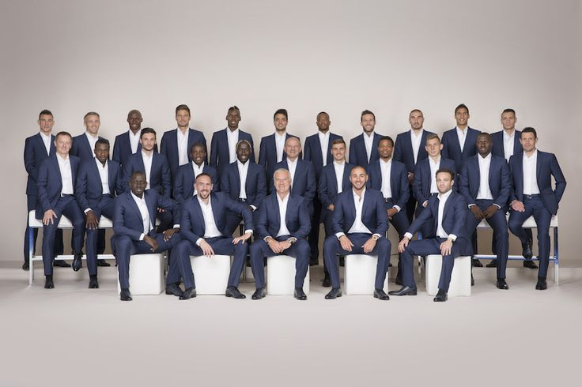

درباره ما

وقتی معماری و فناوری به هم میرسند، چه اتفاقی میافتد؟ در ArchiTech، ما این ترکیب را به واقعیت تبدیل میکنیم. ما تیمی از معماران، طراحان و عاشقان فناوری هستیم که معتقدیم آیندهی معماری فقط دربارهی ساختن نیست، بلکه دربارهی تجربه کردن است. در ArchiTech، زیبایی طراحی سنتی را با فناوریهای پیشرفته ترکیب میکنیم؛ از مدلسازی سهبعدی گرفته تا واقعیت مجازی (VR)، واقعیت افزوده (AR)، واقعیت ترکیبی (MR)، تورهای مجازی و فراتر از آن. اما ماجرا همینجا تمام نمیشود! ما به دنبال تغییر نحوهی تعامل مردم با فضاها هستیم—چه در ایران و چه در سطح بینالمللی. ماموریت ما؟ جان بخشیدن به ایدههایی که شما را به این فکر وا میدارند: «چطور همچین چیزی ممکنه؟!» ما پروژههایی خلق میکنیم که نهتنها از نظر بصری خیرهکنندهاند، بلکه هوشمند، کارآمد و کاربرمحور نیز هستند. چه طراحی یک فضای تجاری در تهران باشد، چه ساخت یک خانهی پایدار در قلب اروپا، تیم ما آمادهی اجرای هر چالشی با خلاقیت، فناوری و اشتیاق فراوان است. ما فقط دربارهی معماری صحبت نمیکنیم؛ ما تجربهها را بهبود میبخشیم، نوآوری را شعلهور میکنیم و فضاهایی خلق میکنیم که مردم واقعاً بتوانند در آن زندگی کنند، کار کنند و پیشرفت کنند.
پوریا احمدی
بنیانگذار مشترک آرکی تک
پوریا احمدی - رهبر بیباک و یکی از بنیانگذاران آرکی تک. وقتی که مشغول ساختن آینده معماری یا تدریس واقعیت مجازی و معماری دیجیتال در دانشگاههای برتر تهران نیست، احتمالاً داره روی یک جزئیات ریز و کماهمیت فکر میکنه (جدی، انگار اسم دیگه ی کمالگرایی پوریا احمدی!). اصرار بیوقفهاش به کمال ممکنه گاهی روز همه رو خراب کنه، اما باعث میشه که هرکدوم از ما بهترین خودمون رو ارائه بدیم. انرژی بیپایانش و عشقش به فناوری اون رو به کاپیتان بیچون و چرای شرکت تبدیل کرده، حتی اگه گاهی اوقات موقع نهایی کردن جزئیات، مجبور بشیم ازش پنهان بشیم!
از 1396مبینا شفیعی
مبینا شفیعی سرپرست طراحی و مدیر استراتژی در آرکی تک و یکی از بنیانگذاران این شرکت است. او به دقت و جزئیات معروف است، هیچ طراحی بدون تأیید نهایی او از دفتر بیرون نمیرود — او نگهبان بیچون و چرای اصول طراحی ماست. با ذهن تیزبین برای استراتژی، مبینا بهخوبی رقبا را تحلیل میکند و همیشه راههایی پیدا میکند تا آرکی تک یک قدم جلوتر از رقبا باشد. و در حالی که مهارتهای طراحیاش بیرقیب است، او احتمالا گربههایش را بیشتر از همسرش دوست داشته باشد — البته باید در این خصوص بحث کنیم!
از 1398مهدی ابوالحسن
مهدی ابوالحسن مدیر پروژههای ساختمانی و سازنده تورهای مجازی در آرکی تک است. او رهبری عملگراست که بیشتر وقتش را در محل پروژه میگذراند و با تیم خود در ارتباط است تا اطمینان حاصل کند که پروژهها به بهترین شکل ساخته میشوند. وقتی که مشغول نظارت بر ساختوساز نیست، میتوانید او را در حال خلق تورهای مجازی جذاب پیدا کنید که طراحیها را به زندگی میآورند—و البته، او تا آخرین نفس مدعی است که قرمهسبزی بهترین غذا در دنیاست، حتی بیشتر از استیک هزار دلاری!
از 1400بایناز شمشیری
بایناز شمشیری طراح گرافیک خلاق ما در آرکی تک است. هر پروژهای که به دست او میافتد، به یک اثر هنری تبدیل میشود و توانایی او در شگفتزده کردن ما با طراحیهایش هیچوقت قدیمی نمیشود. وقتی در حال خلق تصاویر خیرهکننده نیست، احتمالا مشغول یادگیری چیز جدیدی است — البته اگر یک میلیون سال طول بکشد تا شاهکار نهایی را تحویل دهد، تعجب نکنید!
از 1401محمد نوروززاده
محمد نوروززاده طراح وبسایت و متخصص سئو ماهر ما در آرکی تک است. او مغز متفکر پشت وبسایتهای واقعی و کاربردی است (نه اون وبسایتهای جعلی وردپرس که خودش میگه!). هرچند بسیار آرام و کمصدا است، وقتی صحبت میکند، تمام دفتر از خنده میترکه — شوخیهای او به اندازه مهارتهای کد نویسیاش خاص و جذاب است!
از 1403فرصت شغلی
فرصت شغلی
استخدام
اگر میخواهید خواننده متن فارسیتان را کنار نگذارد و آن را تا انتها بخواهند، از ویرایش و بازخوانی متن غافل نشوید. سرویس ویرایش و بازخوانی متون فارسی شبکه مترجمین ایران اینجا است تا متون فارسیتان را خوانشپذیر کند. شغلآدرس وبسایت
ارتباطات
اگر میخواهید خواننده متن فارسیتان را کنار نگذارد و آن را تا انتها بخواهند، از ویرایش و بازخوانی متن غافل نشوید. سرویس کند. اگر میخواهید خواننده متن فارسیتان را کنار نگذارد و آن را تا انتها بخواهند، از ویرایش و بازخوانی متن غافل نشوید. سرویس ویرایش و بازخوانی متون فارسی شبکه مترجمین ایران اینجا است تا متون فارسیتان را خوانشپذیر کند. send it to شغل آدرس وبسایت دوم
اگر میخواهید خواننده متن فارسیتان را کنار نگذارد و آن را تا انتها بخواهند، از ویرایش و بازخوانی متن غافل نشوید. سرویس ویرایش و بازخوانی متون فارسی شبکه مترجمین ایران اینجا است تا متون فارسیتان را خوانشپذیر کند. نگار عباسی سلام خوب هستین سئو و دیجیتال مارکتینگ سئو و دیجیتال مارکتینگ برنامه نویسی و معماری.